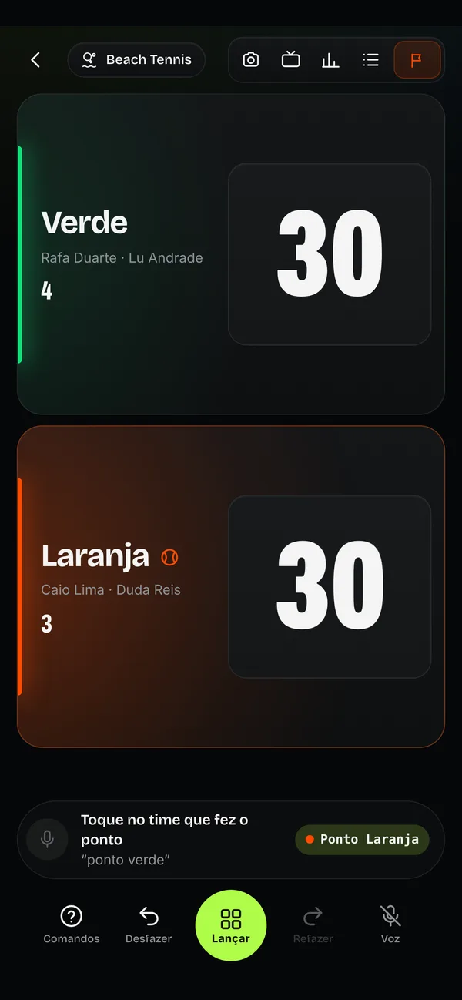
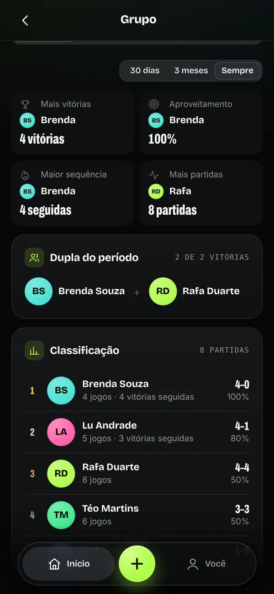
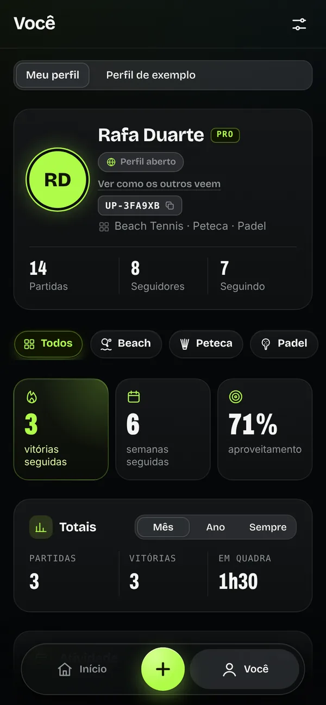

<meta charset="utf-8">
<title>ULTRA PLAY Press Kit</title>
<meta name="description" content="Press kit do ULTRA PLAY: o placar que escuta. Para jogadores, arenas, professores, imprensa e investidores.">
<link rel="preconnect" href="https://fonts.googleapis.com">
<link rel="preconnect" href="https://fonts.gstatic.com" crossorigin>
<link rel="stylesheet" href="https://fonts.googleapis.com/css2?family=Archivo:wdth,wght@62..125,500..900&family=Bricolage+Grotesque:opsz,wght@12..96,400..800&display=swap">
<style>
/* Layout: uma quadra vista de cima. Linhas de quadra como guias, o celular-placar como prova viva, blocos curtos que se leem em 20 segundos. */
:root {
  color-scheme: dark;
  --sand: #060708;        /* fundo: a quadra à noite */
  --court: #0e1112;       /* superfícies */
  --court-2: #161a1b;
  --line: rgba(244, 246, 242, .1);
  --chalk: #f4f6f2;       /* texto */
  --chalk-2: #a9afab;
  --chalk-3: #7d8480;
  --lime: #affb48;        /* a marca: só no que importa */
  --lime-ink: #0b1200;
  --clay: #ff5a1f;        /* o time laranja */
  --mint: #12e07a;        /* o time verde */
  --display: "Archivo", "Archivo Narrow", "Arial Narrow", system-ui, sans-serif;
  --body: "Bricolage Grotesque", system-ui, -apple-system, "Segoe UI", Roboto, sans-serif;
  --gutter: clamp(16px, 4vw, 48px);
}
* { box-sizing: border-box; }
html { scroll-behavior: smooth; }
body { margin: 0; background: var(--sand); color: var(--chalk); font: 400 17px/1.55 var(--body); -webkit-font-smoothing: antialiased; }
a { color: inherit; }
.wrap { width: min(1180px, 100%); margin-inline: auto; padding-inline: var(--gutter); }
.disp { font-family: var(--display); font-stretch: 68%; font-weight: 900; text-transform: uppercase; letter-spacing: -.005em; line-height: .9; text-wrap: balance; }
.kicker { display: inline-flex; align-items: center; gap: 10px; color: var(--lime); font: 800 13px/1 var(--body); letter-spacing: .16em; text-transform: uppercase; }
.kicker::before { content: ""; width: 22px; height: 2px; background: currentColor; }
.muted { color: var(--chalk-2); }
.logo { color: var(--lime); display: block; }
:focus-visible { outline: 2px solid var(--lime); outline-offset: 3px; border-radius: 6px; }
@media (prefers-reduced-motion: reduce) { *, *::before, *::after { animation: none !important; transition: none !important; } html { scroll-behavior: auto; } }

/* topo */
.top { position: sticky; top: env(safe-area-inset-top, 0px); z-index: 10; background: color-mix(in srgb, var(--sand) 84%, transparent); backdrop-filter: blur(14px); -webkit-backdrop-filter: blur(14px); border-bottom: 1px solid var(--line); }
.top .wrap { display: flex; align-items: center; gap: 18px; height: 62px; }
.top .logo { width: 116px; height: 29px; flex: none; }
.top nav { display: flex; gap: 4px; margin-left: auto; overflow-x: auto; scrollbar-width: none; min-width: 0; }
.top nav::-webkit-scrollbar { display: none; }
.top nav a { flex: none; padding: 8px 11px; border-radius: 10px; color: var(--chalk-2); text-decoration: none; font: 600 14px/1 var(--body); }
.top nav a:hover { color: var(--chalk); background: var(--court-2); }
.btn { display: inline-flex; align-items: center; justify-content: center; gap: 10px; height: 52px; padding: 0 24px; border-radius: 16px; border: 1px solid var(--line); background: var(--court-2); color: var(--chalk); font: 750 16px/1 var(--body); text-decoration: none; cursor: pointer; }
.btn:hover { border-color: rgba(244, 246, 242, .28); }
.btn.lime { background: var(--lime); border-color: transparent; color: var(--lime-ink); }
.btn.sm { height: 40px; padding: 0 16px; border-radius: 12px; font-size: 14px; }
.top .btn { flex: none; }
@media (max-width: 760px) { .top nav { display: none; } .top .btn { margin-left: auto; } }

/* abertura */
.hero { position: relative; overflow: hidden; padding-block: clamp(40px, 7vw, 88px) clamp(40px, 6vw, 72px); }
.hero::before { content: ""; position: absolute; inset: -30% -20% auto; height: 900px; background: radial-gradient(520px 340px at 18% 30%, rgba(175, 251, 72, .14), transparent 70%), radial-gradient(480px 320px at 88% 40%, rgba(255, 90, 31, .12), transparent 70%); pointer-events: none; }
.hero .wrap { position: relative; display: grid; grid-template-columns: minmax(0, 1.15fr) minmax(0, .85fr); gap: clamp(28px, 5vw, 64px); align-items: center; }
.hero h1 { margin: 18px 0 20px; font-size: clamp(64px, 11vw, 150px); }
.hero h1 em { font-style: normal; color: var(--lime); }
.hero .lead { margin: 0 0 30px; max-width: 34ch; font-size: clamp(18px, 2vw, 22px); line-height: 1.45; color: var(--chalk-2); }
.hero .lead b { color: var(--chalk); font-weight: 650; }
.cta { display: flex; flex-wrap: wrap; gap: 12px; }
.facts { display: grid; grid-template-columns: repeat(4, minmax(0, 1fr)); gap: 1px; margin-top: clamp(40px, 6vw, 72px); border: 1px solid var(--line); border-radius: 20px; overflow: hidden; background: var(--line); }
.facts div { background: var(--sand); padding: 18px 20px; min-width: 0; }
.facts b { display: block; font: 900 44px/1 var(--display); font-stretch: 68%; color: var(--chalk); font-variant-numeric: tabular-nums; }
.facts span { display: block; margin-top: 6px; color: var(--chalk-2); font-size: 14.5px; line-height: 1.35; }
@media (max-width: 900px) { .hero .wrap { grid-template-columns: 1fr; } .facts { grid-template-columns: 1fr 1fr; } }

/* o celular que marca sozinho */
.demo { position: relative; justify-self: center; width: min(360px, 100%); }
.phone { position: relative; aspect-ratio: 9 / 19; width: 100%; max-width: 100%; padding: 10px; border-radius: 52px; background: #1b1e20; box-shadow: 0 0 0 1.5px rgba(255, 255, 255, .1), 0 50px 120px -30px rgba(0, 0, 0, .9), 0 0 100px -30px rgba(175, 251, 72, .35); }
.screen { position: relative; height: 100%; border-radius: 43px; overflow: hidden; background: #0a0c0d; padding: 40px 14px 16px; display: flex; flex-direction: column; gap: 10px; }
.s-top { display: flex; justify-content: space-between; align-items: center; padding: 0 6px 4px; font: 700 13px/1 var(--body); color: var(--chalk-2); }
.s-top i { display: inline-block; width: 8px; height: 8px; border-radius: 50%; background: var(--clay); margin-right: 6px; }
.team { position: relative; flex: 1; border-radius: 26px; display: flex; align-items: center; justify-content: space-between; padding: 0 14px 0 22px; overflow: hidden; transition: filter .3s; }
.team.t0 { background: linear-gradient(135deg, rgba(18, 224, 122, .24), rgba(18, 224, 122, .04) 62%), #111416; }
.team.t1 { background: linear-gradient(135deg, rgba(255, 90, 31, .22), rgba(255, 90, 31, .04) 62%), #111416; }
.team::before { content: ""; position: absolute; left: 0; top: 22%; bottom: 22%; width: 5px; border-radius: 0 4px 4px 0; background: var(--c); }
.team.t0 { --c: var(--mint); } .team.t1 { --c: var(--clay); }
.team.hit { filter: brightness(1.35); }
.tn { font: 800 28px/1 var(--body); display: grid; gap: 8px; }
.tn small { font: 500 12.5px/1 var(--body); color: var(--chalk-2); }
.tn em { font: 900 28px/1 var(--display); font-stretch: 68%; font-style: normal; font-variant-numeric: tabular-nums; }
.sc { position: relative; width: 44%; aspect-ratio: 5 / 6; border-radius: 20px; background: rgba(0, 0, 0, .35); box-shadow: inset 0 0 0 1.5px rgba(255, 255, 255, .06); display: grid; place-items: center; overflow: hidden; font: 900 clamp(64px, 9vw, 92px)/1 var(--display); font-stretch: 68%; font-variant-numeric: tabular-nums; }
.sc span { display: block; transition: transform .35s cubic-bezier(.2, .9, .3, 1.2), opacity .25s; }
.sc span.out { transform: translateY(-70%); opacity: 0; }
.listen { display: flex; align-items: center; gap: 10px; padding: 9px; border-radius: 20px; background: #131617; box-shadow: inset 0 0 0 1.5px rgba(255, 255, 255, .06); font-size: 13px; }
.mic { flex: none; display: grid; place-items: center; width: 40px; height: 40px; border-radius: 50%; background: rgba(175, 251, 72, .14); color: var(--lime); }
.mic svg { width: 18px; height: 18px; }
.listen.on .mic { animation: pulse 1.1s ease-in-out infinite; }
@keyframes pulse { 50% { box-shadow: 0 0 0 8px rgba(175, 251, 72, .12); } }
.listen b { display: block; font-weight: 700; }
.listen small { color: var(--chalk-2); }
.ok { margin-left: auto; padding: 7px 10px; border-radius: 999px; background: rgba(18, 224, 122, .16); color: var(--mint); font: 800 11px/1 var(--display); font-stretch: 80%; letter-spacing: .08em; text-transform: uppercase; opacity: 0; transition: opacity .2s; white-space: nowrap; }
.ok.show { opacity: 1; }
.bubble { position: absolute; left: -26px; top: 46%; z-index: 2; display: flex; align-items: center; gap: 10px; padding: 14px 20px; border-radius: 26px 26px 26px 8px; background: var(--lime); color: var(--lime-ink); font: 900 26px/1 var(--display); font-stretch: 70%; text-transform: uppercase; box-shadow: 0 20px 50px -14px rgba(175, 251, 72, .6); transform-origin: 10% 100%; transform: scale(.4); opacity: 0; transition: transform .3s cubic-bezier(.2, .9, .3, 1.4), opacity .2s; white-space: nowrap; }
.bubble.show { transform: none; opacity: 1; }
.bubble svg { width: 22px; height: 22px; flex: none; }
.demo-cap { margin-top: 16px; text-align: center; color: var(--chalk-3); font-size: 13.5px; }
@media (max-width: 420px) { .bubble { left: -6px; font-size: 22px; } }

/* seções */
section.blk { padding-block: clamp(56px, 8vw, 110px); border-top: 1px solid var(--line); }
.blk h2 { margin: 16px 0 18px; font-size: clamp(44px, 7vw, 92px); }
.blk .sub { margin: 0; max-width: 60ch; color: var(--chalk-2); font-size: clamp(17px, 1.6vw, 19px); }
.two { display: grid; grid-template-columns: minmax(0, 1fr) minmax(0, 1fr); gap: clamp(28px, 5vw, 72px); align-items: start; }
@media (max-width: 860px) { .two { grid-template-columns: 1fr; } }

/* o problema */
.argue { display: grid; gap: 12px; margin-top: 8px; }
.say { display: flex; gap: 12px; align-items: flex-end; }
.say.r { flex-direction: row-reverse; }
.say p { margin: 0; max-width: 80%; padding: 14px 18px; border-radius: 22px 22px 22px 6px; background: var(--court-2); font-size: 17px; }
.say.r p { border-radius: 22px 22px 6px 22px; background: color-mix(in srgb, var(--clay) 18%, var(--court-2)); }
.say i { flex: none; width: 34px; height: 34px; border-radius: 50%; display: grid; place-items: center; font: 900 14px/1 var(--display); font-style: normal; color: var(--lime-ink); background: var(--mint); }
.say.r i { background: var(--clay); }
.say.ref p { background: var(--lime); color: var(--lime-ink); font-weight: 650; }
.say.ref i { background: var(--chalk); }
.say.ref i svg { width: 18px; height: 18px; }
.science { margin-top: 28px; padding: 20px 22px; border-radius: 18px; border: 1px solid var(--line); background: var(--court); font-size: 15.5px; color: var(--chalk-2); }
.science b { color: var(--chalk); }
.science cite { display: block; margin-top: 8px; font-style: normal; color: var(--chalk-3); font-size: 13px; }

/* como funciona */
.moments { display: grid; grid-template-columns: repeat(3, minmax(0, 1fr)); gap: 18px; margin-top: 44px; }
.mo { display: grid; gap: 14px; align-content: start; min-width: 0; }
.mo figure { margin: 0; aspect-ratio: 600 / 900; border-radius: 26px; overflow: hidden; border: 1px solid var(--line); background: var(--court); max-width: 100%; }
.mo img { width: 100%; height: auto; display: block; }
.mo .when { font: 900 15px/1 var(--display); font-stretch: 80%; letter-spacing: .14em; text-transform: uppercase; color: var(--lime); }
.mo h3 { margin: 0; font: 800 24px/1.15 var(--body); }
.mo p { margin: 0; color: var(--chalk-2); font-size: 15.5px; }
@media (max-width: 860px) { .moments { grid-template-columns: 1fr; } .mo figure { aspect-ratio: 600 / 700; } }
.feats { display: grid; grid-template-columns: repeat(4, minmax(0, 1fr)); gap: 12px; margin-top: 34px; }
.feat { padding: 18px; border-radius: 18px; background: var(--court); border: 1px solid var(--line); min-width: 0; }
.feat svg { width: 24px; height: 24px; color: var(--lime); }
.feat b { display: block; margin: 12px 0 4px; font-size: 16.5px; }
.feat span { color: var(--chalk-2); font-size: 14.5px; line-height: 1.45; }
@media (max-width: 960px) { .feats { grid-template-columns: 1fr 1fr; } }
@media (max-width: 520px) { .feats { grid-template-columns: 1fr; } }

/* a ciência por trás */
.why { display: grid; grid-template-columns: repeat(3, minmax(0, 1fr)); gap: 14px; margin-top: 40px; }
.why article { padding: 22px; border-radius: 20px; background: var(--court); border: 1px solid var(--line); display: grid; gap: 10px; align-content: start; min-width: 0; }
.why h3 { margin: 0; font: 900 30px/.95 var(--display); font-stretch: 70%; text-transform: uppercase; }
.why p { margin: 0; color: var(--chalk-2); font-size: 15px; }
.why .in { color: var(--chalk); font-size: 15px; }
.why .in::before { content: "No ULTRA PLAY: "; color: var(--lime); font-weight: 700; }
.why cite { font-style: normal; color: var(--chalk-3); font-size: 12.5px; }
@media (max-width: 960px) { .why { grid-template-columns: 1fr 1fr; } }
@media (max-width: 600px) { .why { grid-template-columns: 1fr; } }

/* para quem */
.who { display: grid; grid-template-columns: repeat(3, minmax(0, 1fr)); gap: 14px; margin-top: 40px; }
.who article { padding: 26px; border-radius: 24px; background: var(--court); border: 1px solid var(--line); display: grid; gap: 14px; align-content: start; min-width: 0; }
.who .tag { font: 900 14px/1 var(--display); font-stretch: 80%; letter-spacing: .14em; text-transform: uppercase; color: var(--lime); }
.who h3 { margin: 0; font: 900 38px/.92 var(--display); font-stretch: 68%; text-transform: uppercase; text-wrap: balance; }
.who ul { margin: 0; padding: 0; list-style: none; display: grid; gap: 10px; }
.who li { display: flex; gap: 10px; color: var(--chalk-2); font-size: 15.5px; }
.who li::before { content: ""; flex: none; width: 7px; height: 7px; margin-top: 9px; border-radius: 50%; background: var(--lime); }
@media (max-width: 900px) { .who { grid-template-columns: 1fr; } }

/* mercado */
.stats { display: grid; grid-template-columns: repeat(4, minmax(0, 1fr)); gap: 14px; margin-top: 40px; }
.stat { padding: 22px; border-radius: 20px; background: var(--court); border: 1px solid var(--line); display: grid; gap: 8px; align-content: start; min-width: 0; }
.stat b { font: 900 clamp(46px, 5vw, 64px)/.95 var(--display); font-stretch: 66%; font-variant-numeric: tabular-nums; }
.stat span { color: var(--chalk-2); font-size: 15px; }
.stat cite { font-style: normal; color: var(--chalk-3); font-size: 12.5px; }
.stat cite a { color: var(--chalk-2); }
@media (max-width: 960px) { .stats { grid-template-columns: 1fr 1fr; } }
@media (max-width: 480px) { .stats { grid-template-columns: 1fr; } }
.calc { margin-top: 16px; padding: 22px 24px; border-radius: 20px; border: 1px dashed rgba(175, 251, 72, .35); display: flex; flex-wrap: wrap; align-items: center; gap: 10px 22px; }
.calc .eq { font: 900 clamp(26px, 3.4vw, 38px)/1 var(--display); font-stretch: 70%; text-transform: uppercase; font-variant-numeric: tabular-nums; }
.calc .eq em { font-style: normal; color: var(--lime); }
.calc p { margin: 0; flex: 1 1 260px; color: var(--chalk-3); font-size: 13.5px; }

/* modelo */
.plans { display: grid; grid-template-columns: repeat(4, minmax(0, 1fr)); gap: 12px; margin-top: 40px; }
.plan { padding: 22px; border-radius: 20px; background: var(--court); border: 1px solid var(--line); display: grid; gap: 8px; align-content: start; min-width: 0; }
.plan.hi { border-color: rgba(175, 251, 72, .5); background: linear-gradient(180deg, rgba(175, 251, 72, .08), var(--court) 60%); }
.plan .n { font: 800 15px/1 var(--body); color: var(--chalk-2); }
.plan .p { font: 900 40px/1 var(--display); font-stretch: 68%; font-variant-numeric: tabular-nums; }
.plan .p small { font: 600 14px/1 var(--body); color: var(--chalk-2); }
.plan span { color: var(--chalk-2); font-size: 14.5px; }
@media (max-width: 960px) { .plans { grid-template-columns: 1fr 1fr; } }
@media (max-width: 480px) { .plans { grid-template-columns: 1fr; } }
.units { display: flex; flex-wrap: wrap; gap: 10px; margin-top: 16px; }
.units span { padding: 10px 14px; border-radius: 12px; background: var(--court-2); font-size: 14.5px; color: var(--chalk-2); }
.units b { color: var(--chalk); }

/* pronto hoje */
.built { display: grid; grid-template-columns: repeat(3, minmax(0, 1fr)); gap: 0 28px; margin-top: 34px; padding: 0; list-style: none; }
.built li { display: flex; gap: 12px; padding: 13px 0; border-bottom: 1px solid var(--line); font-size: 15.5px; min-width: 0; }
.built svg { flex: none; width: 20px; height: 20px; color: var(--lime); margin-top: 2px; }
@media (max-width: 860px) { .built { grid-template-columns: 1fr; } }

/* marca */
.brand { display: grid; grid-template-columns: minmax(0, 1.1fr) minmax(0, .9fr); gap: 18px; margin-top: 40px; }
.tile { border-radius: 22px; border: 1px solid var(--line); background: var(--court); padding: 22px; min-width: 0; display: grid; gap: 14px; align-content: start; }
.tile h3 { margin: 0; font: 800 15px/1 var(--body); letter-spacing: .08em; text-transform: uppercase; color: var(--chalk-2); }
.logos { display: grid; grid-template-columns: 1fr 1fr; gap: 12px; }
.logos div { display: grid; place-items: center; aspect-ratio: 16 / 9; border-radius: 16px; max-width: 100%; }
.logos .d { background: #060708; border: 1px solid var(--line); color: var(--lime); }
.logos .l { background: var(--lime); color: var(--lime-ink); }
.logos .w { background: #f4f6f2; color: #0b1200; }
.logos .o { background: var(--clay); color: #fff; }
.logos svg { width: 64%; height: auto; }
.swatches { display: grid; grid-template-columns: repeat(auto-fill, minmax(118px, 1fr)); gap: 10px; }
.sw { display: grid; gap: 8px; padding: 0 0 10px; border-radius: 14px; background: var(--court-2); overflow: hidden; border: 0; color: var(--chalk); text-align: left; font: inherit; cursor: pointer; }
.sw i { display: block; height: 60px; background: var(--c); }
.sw b, .sw small { padding-inline: 12px; }
.sw b { font-size: 14px; }
.sw small { color: var(--chalk-2); font-size: 12.5px; font-variant-numeric: tabular-nums; }
.type { display: grid; gap: 8px; }
.type .a { font: 900 54px/.9 var(--display); font-stretch: 68%; text-transform: uppercase; }
.type .b { font: 500 18px/1.4 var(--body); color: var(--chalk-2); }
.shots { display: grid; grid-template-columns: repeat(5, minmax(0, 1fr)); gap: 10px; }
.shots a { display: block; border-radius: 14px; overflow: hidden; border: 1px solid var(--line); max-width: 100%; }
.shots img { display: block; width: 100%; height: auto; }
@media (max-width: 860px) { .brand { grid-template-columns: 1fr; } .shots { grid-template-columns: repeat(3, minmax(0, 1fr)); } }
.reel { display: grid; grid-template-columns: minmax(0, 220px) minmax(0, 1fr); gap: 22px; align-items: center; }
.reel video { width: 100%; max-width: 100%; aspect-ratio: 9 / 16; border-radius: 18px; background: #000; display: block; }
@media (max-width: 560px) { .reel { grid-template-columns: 1fr; } .reel video { width: min(260px, 100%); } }
.boiler { margin: 0; padding: 18px 20px; border-radius: 16px; background: var(--court-2); color: var(--chalk); font-size: 15.5px; line-height: 1.55; }
.row { display: flex; flex-wrap: wrap; gap: 10px; align-items: center; }
.copied { color: var(--lime); font-size: 13.5px; min-height: 1.3em; }
.sheet { display: grid; grid-template-columns: max-content minmax(0, 1fr); gap: 10px 22px; margin: 0; font-size: 15.5px; }
.sheet dt { color: var(--chalk-3); }
.sheet dd { margin: 0; min-width: 0; overflow-wrap: anywhere; }
.todo { color: var(--clay); }

/* fim */
.end { position: relative; overflow: hidden; padding-block: clamp(80px, 12vw, 160px); text-align: center; border-top: 1px solid var(--line); }
.end::before { content: ""; position: absolute; inset: 0; background: radial-gradient(600px 300px at 50% 60%, rgba(175, 251, 72, .14), transparent 70%); pointer-events: none; }
.end .wrap { position: relative; display: grid; justify-items: center; gap: 26px; }
.end h2 { margin: 0; font-size: clamp(56px, 10vw, 140px); }
.end h2 em { font-style: normal; color: var(--lime); }
.end p { margin: 0; max-width: 46ch; color: var(--chalk-2); font-size: 19px; }
footer { padding-block: 28px 40px; border-top: 1px solid var(--line); color: var(--chalk-3); font-size: 14px; }
footer .wrap { display: flex; flex-wrap: wrap; gap: 12px 24px; justify-content: space-between; align-items: center; }
footer .logo { width: 104px; height: 26px; }
.ico { width: 1em; height: 1em; fill: none; stroke: currentColor; stroke-width: 1.9; stroke-linecap: round; stroke-linejoin: round; }
</style>

<svg width="0" height="0" style="position:absolute" aria-hidden="true"><defs>
<symbol id="logo-h" viewBox="0 0 182 46" class="sym-fill"><path fill="currentColor" stroke="none" d="M0.595607 22.7648L13.3915 0.583801H26.1638L10.5924 27.5398H4.19444C0.689691 27.5398 -0.956837 25.3758 0.57208 22.7413L0.595607 22.7648Z" fill-rule="evenodd"/><path fill="currentColor" stroke="none" d="M45.8045 23.0471L33.0087 45.2282H20.2363L35.8078 18.2722H42.2057C45.7105 18.2722 47.357 20.4362 45.8281 23.0706L45.8045 23.0471Z" fill-rule="evenodd"/><path fill="currentColor" stroke="none" d="M26.1874 13.4737V0.583801H45.9928L35.7843 18.2722H32.5618C29.057 18.2722 26.1639 16.1082 26.1639 13.4737H26.1874Z" fill-rule="evenodd"/><path fill="currentColor" stroke="none" d="M20.2128 32.3382V45.2282H0.407471L10.6159 27.5398H13.8384C17.3432 27.5398 20.2364 29.7038 20.2364 32.3382H20.2128Z" fill-rule="evenodd"/><path fill="currentColor" stroke="none" d="M64.2158 44.7909C58.0965 44.7909 53.8067 40.6272 53.8067 34.4448V0H60.4938V34.4448C60.4938 37.0313 62.0709 32.96 64.2158 32.96C66.3608 32.96 67.9379 37.0313 67.9379 34.4448V0H74.4988V34.4448C74.4988 40.6272 70.3352 44.7909 64.2158 44.7909Z"/><path fill="currentColor" stroke="none" d="M79.0124 44.16V0H85.6995V37.8514H97.6227V44.16H79.0124Z"/><path fill="currentColor" stroke="none" d="M94.0583 6.30857L91.2001 3.15429L94.0583 0H115.381L112.4 3.15429L115.381 6.30857H108.063V44.16H101.376V6.30857H94.0583Z"/><path fill="currentColor" stroke="none" d="M139.968 44.16H133.029L128.171 25.9282H124.702V44.16H118.015V0H128.487C134.859 0 138.959 4.16366 138.959 10.5353V15.3929C138.959 19.4935 137.256 22.6478 134.354 24.4142L139.968 44.16ZM124.702 6.30857V19.6197H128.171C130.758 19.6197 132.272 18.1056 132.272 15.5191V10.4091C132.272 7.82263 130.758 6.30857 128.171 6.30857H124.702Z"/><path fill="currentColor" stroke="none" d="M157.542 44.16L156.091 34.3817L152.495 32.16L148.9 34.3817L147.449 44.16H140.761L148.079 0H157.038L164.356 44.16H157.542ZM149.783 27.947H155.208L152.495 9.46286L149.783 27.947Z"/><path fill="currentColor" stroke="none" d="M161.007 38.4H179.407L175.8 44.156L161.007 44.1564V38.4Z"/><path fill="currentColor" stroke="none" d="M164.064 18V5.15911H167.109C168.962 5.15911 170.154 6.36983 170.154 8.22258V9.7268C170.154 11.5796 168.962 12.7903 167.109 12.7903H166.008V18H164.064ZM166.008 10.9559H167.017C167.769 10.9559 168.21 10.5156 168.21 9.76349V8.18589C168.21 7.43378 167.769 6.99353 167.017 6.99353H166.008V10.9559ZM171.418 18V5.15911H173.363V16.1656H176.83V18H171.418ZM171.625 33L171.203 30.1567H169.112L168.69 33H166.746L168.874 20.1591H171.479L173.606 33H171.625ZM169.369 28.2856H170.947L170.158 22.9107L169.369 28.2856ZM178.374 20.1591H180.41L177.806 27.6252V33H175.861V27.6252L173.256 20.1591H175.329L176.833 25.057L178.374 20.1591Z"/></symbol>
<symbol id="mic" viewBox="0 0 24 24"><rect x="9" y="2.5" width="6" height="12" rx="3"/><path d="M5.5 11a6.5 6.5 0 0 0 13 0"/><path d="M12 17.5V21"/></symbol>
<symbol id="check" viewBox="0 0 24 24"><path d="M5 12.5l4.5 4.5L19 7.5"/></symbol>
<symbol id="whistle" viewBox="0 0 24 24"><circle cx="9" cy="14" r="5.5"/><path d="M13 9.5 21 6v5l-6.5 1.5"/><circle cx="9" cy="14" r="1.6"/></symbol>
<symbol id="rules" viewBox="0 0 24 24"><rect x="4" y="3.5" width="16" height="17" rx="2.5"/><path d="M8 8h8M8 12h8M8 16h5"/></symbol>
<symbol id="watch" viewBox="0 0 24 24"><rect x="6" y="6" width="12" height="12" rx="3.2"/><path d="M9 6l.7-3h4.6l.7 3M9 18l.7 3h4.6l.7-3"/><path d="M12 9.5V12l1.6 1.2"/></symbol>
<symbol id="camera" viewBox="0 0 24 24"><path d="M4 8.5A2.5 2.5 0 0 1 6.5 6h1.8l1.4-2h4.6l1.4 2h1.8A2.5 2.5 0 0 1 20 8.5v8a2.5 2.5 0 0 1-2.5 2.5h-11A2.5 2.5 0 0 1 4 16.5z"/><circle cx="12" cy="12.4" r="3.4"/></symbol>
<symbol id="replay" viewBox="0 0 24 24"><path d="M3.5 12a8.5 8.5 0 1 0 2.6-6.1"/><path d="M3.5 4v4.5H8"/><path d="m10 9 5 3-5 3z"/></symbol>
<symbol id="spark" viewBox="0 0 24 24"><path d="M11 3.5l1.7 4.8 4.8 1.7-4.8 1.7L11 16.5l-1.7-4.8L4.5 10l4.8-1.7z"/><path d="M18 14.5l.8 2.2 2.2.8-2.2.8-.8 2.2-.8-2.2-2.2-.8 2.2-.8z"/></symbol>
<symbol id="users" viewBox="0 0 24 24"><circle cx="9" cy="8" r="3.5"/><path d="M2.5 20c.8-3.4 3.3-5.5 6.5-5.5s5.7 2.1 6.5 5.5"/><path d="M16 4.6a3.5 3.5 0 0 1 0 6.8M18 14.8c1.9.8 3.1 2.6 3.5 5.2"/></symbol>
<symbol id="offline" viewBox="0 0 24 24"><path d="M2 8.8a15 15 0 0 1 4.2-2.6M10.5 5.1A15 15 0 0 1 22 8.8M5 12.5a10 10 0 0 1 5.2-2.7M16.6 11.1a10 10 0 0 1 2.4 1.4M8.5 16a5 5 0 0 1 7 0M12 20h.01"/><path d="m3 3 18 18"/></symbol>
</defs></svg>

<header class="top">
  <div class="wrap">
    <a href="#inicio" aria-label="ULTRA PLAY, início"><svg class="logo" viewBox="0 0 182 46" role="img" aria-label="ULTRA PLAY"><use href="#logo-h"/></svg></a>
    <nav aria-label="Seções">
      <a href="#problema">O problema</a><a href="#como">Como funciona</a><a href="#ciencia">Por que pega</a><a href="#quem">Para quem</a><a href="#mercado">Mercado</a><a href="#modelo">Modelo</a><a href="#marca">Marca</a>
    </nav>
    <a class="btn lime sm" href="https://filipeultra.github.io/canta-placar/?utm_source=presskit&amp;utm_medium=topo">Abrir o app</a>
  </div>
</header>

<main id="inicio">
  <section class="hero">
    <div class="wrap">
      <div>
        <span class="kicker">Press kit · outubro 2026</span>
        <h1 class="disp">O placar<br>que <em>escuta.</em></h1>
        <p class="lead">Você fala <b>“ponto verde”</b>. O ULTRA PLAY marca, segue a regra do esporte, filma o lance e, no fim, entrega os números do jogo. <b>Ninguém para a partida. Ninguém discute o placar.</b></p>
        <div class="cta">
          <a class="btn lime" href="https://filipeultra.github.io/canta-placar/?utm_source=presskit&amp;utm_medium=hero">Marcar meu próximo jogo</a>
          <a class="btn" href="#marca">Baixar fotos e logo</a>
        </div>
      </div>
      <div class="demo" aria-hidden="true">
        <div class="phone">
          <div class="screen">
            <div class="s-top"><span><i></i>Beach tennis</span><span id="dSet">Set 1</span></div>
            <div class="team t0" id="dT0"><div class="tn">Verde<small>Rafa · Lu</small><em id="dG0">2</em></div><div class="sc"><span id="dS0">30</span></div></div>
            <div class="team t1" id="dT1"><div class="tn">Laranja<small>Caio · Duda</small><em id="dG1">1</em></div><div class="sc"><span id="dS1">15</span></div></div>
            <div class="listen on" id="dListen"><span class="mic"><svg class="ico"><use href="#mic"/></svg></span><span><b>Ouvindo</b><small id="dHeard">fale o ponto depois do lance</small></span><span class="ok" id="dOk">Ponto</span></div>
          </div>
        </div>
        <div class="bubble" id="dBubble"><svg class="ico"><use href="#mic"/></svg><span id="dSay">“ponto verde!”</span></div>
        <p class="demo-cap">Demonstração: o placar seguindo os comandos de voz.</p>
      </div>
      <div class="facts" style="grid-column: 1 / -1">
        <div><b>0</b><span>toques na tela para marcar um ponto</span></div>
        <div><b>6</b><span>esportes, cada um com a sua regra: beach tennis, padel, tênis, peteca, vôlei de praia e futevôlei</span></div>
        <div><b>1</b><span>celular vira placar, câmera e analista do jogo</span></div>
        <div><b>100%</b><span>funciona sem internet na quadra, direto do navegador</span></div>
      </div>
    </div>
  </section>

  <section class="blk" id="problema">
    <div class="wrap two">
      <div>
        <span class="kicker">O problema</span>
        <h2 class="disp">Tava 5-4<br>ou 4-5?</h2>
        <p class="sub">Toda partida amadora tem essa pausa. Alguém esquece o placar, a dupla do outro lado lembra diferente, o jogo esfria. E quando acaba, sobra só o resultado: quem jogou melhor, qual golpe funcionou e onde o jogo virou se perdem no caminho para o carro.</p>
        <div class="science">
          <b>Não é falta de atenção. É o cérebro.</b> A memória reconstrói em vez de gravar, e cada um lembra mais dos próprios acertos. Numa quadra com quatro pessoas cansadas, são quatro placares diferentes.
          <cite>Loftus e Palmer, 1974 (memória reconstrutiva) · Ross e Sicoly, 1979 (viés egocêntrico)</cite>
        </div>
      </div>
      <div class="argue" aria-label="Uma discussão comum de placar">
        <div class="say"><i>V</i><p>Tá 5-4 pra gente, né?</p></div>
        <div class="say r"><i>L</i><p>Que 5-4? Tá 4-5. Vocês perderam aquele game do saque.</p></div>
        <div class="say"><i>V</i><p>Aquele foi o anterior…</p></div>
        <div class="say r"><i>L</i><p>Ih, então volta tudo. Quem saca?</p></div>
        <div class="say ref"><i><svg class="ico"><use href="#whistle"/></svg></i><p>ULTRA PLAY: 5-4 Verde, 30-15. Saque do Caio. Lado trocado no game 9.</p></div>
      </div>
    </div>
  </section>

  <section class="blk" id="como">
    <div class="wrap">
      <span class="kicker">Como funciona</span>
      <h2 class="disp">Antes, durante<br>e depois do jogo</h2>
      <p class="sub">Um celular encostado na rede faz o trabalho de um juiz, um cinegrafista e um analista. Do navegador, sem baixar nada.</p>
      <div class="moments">
        <div class="mo"><figure></figure><span class="when">Antes · 10 segundos</span><h3>Escolhe o esporte e os times</h3><p>Formato, sets e regra já vêm certos para cada esporte. Dá para jogar só com as cores ou pôr o nome de cada um.</p></div>
        <div class="mo"><figure></figure><span class="when">Durante · de mãos livres</span><h3>Fala o ponto e segue jogando</h3><p>“Ponto verde”, “ace Bia”, “desfazer”. Também marca por toque, pelo relógio ou pelo fone. O placar avisa a troca de lado e quem saca.</p></div>
        <div class="mo"><figure></figure><span class="when">Depois · o melhor momento</span><h3>Números, replay e story pronto</h3><p>Aces, winners, erros, sequências, onde o jogo virou e uma análise com dica para o próximo. O replay animado vira vídeo para o story.</p></div>
      </div>
      <div class="feats">
        <div class="feat"><svg class="ico"><use href="#mic"/></svg><b>Voz que entende a quadra</b><span>Comandos curtos em português, com o nome dos jogadores, golpe e tipo de erro.</span></div>
        <div class="feat"><svg class="ico"><use href="#rules"/></svg><b>Regra certa de cada esporte</b><span>Vantagem ou ponto de ouro, tie-break, troca de lado, set a 21 da peteca.</span></div>
        <div class="feat"><svg class="ico"><use href="#watch"/></svg><b>Relógio e fone viram controle</b><span>Garmin, Apple Watch, Galaxy, Amazfit ou fone Bluetooth marcam o ponto.</span></div>
        <div class="feat"><svg class="ico"><use href="#camera"/></svg><b>Cada ponto vira um lance em vídeo</b><span>Grava com o celular ou com um segundo aparelho pelo QR Code, com lente 0.5×.</span></div>
        <div class="feat"><svg class="ico"><use href="#replay"/></svg><b>Replay animado</b><span>A partida inteira em 15 segundos, em MP4 ou GIF, com placar e gráfico do jogo.</span></div>
        <div class="feat"><svg class="ico"><use href="#spark"/></svg><b>Análise do jogo</b><span>Onde a partida foi decidida e uma dica para o próximo, ao fim de cada jogo.</span></div>
        <div class="feat"><svg class="ico"><use href="#users"/></svg><b>Grupos com ranking</b><span>A turma de sempre ganha ranking do mês, resenha e convite por link.</span></div>
        <div class="feat"><svg class="ico"><use href="#offline"/></svg><b>Sem internet, sem loja</b><span>Abre no navegador e instala na tela inicial. Na quadra, funciona sem sinal.</span></div>
      </div>
    </div>
  </section>

  <section class="blk" id="ciencia">
    <div class="wrap">
      <span class="kicker">Por que pega</span>
      <h2 class="disp">Feito para o jeito<br>que o cérebro funciona</h2>
      <p class="sub">O ULTRA PLAY foi desenhado em cima de efeitos bem estudados da psicologia. Eles explicam por que quem marca uma partida quer marcar a próxima.</p>
      <div class="why">
        <article><h3>O juiz que não torce</h3><p>Cada lado lembra mais dos próprios pontos, e a memória muda a história depois.</p><p class="in">cada ponto fica registrado na hora, com horário e quem marcou. Acabou a discussão.</p><cite>Ross e Sicoly, 1979 · Loftus e Palmer, 1974</cite></article>
        <article><h3>Pico e fim</h3><p>A gente lembra de uma experiência pelo momento mais forte e pelo jeito que ela termina.</p><p class="in">o fim de cada jogo é o ponto alto: o lance da virada, os números e o vídeo prontos para mandar.</p><cite>Kahneman e colegas, 1993 · Redelmeier e Kahneman, 1996</cite></article>
        <article><h3>Construído por você</h3><p>Damos mais valor ao que ajudamos a montar e ao que já é nosso.</p><p class="in">cada partida soma no seu histórico, recordes e conquistas. Quanto mais joga, mais o app vale para você.</p><cite>Norton, Mochon e Ariely, 2012 · Thaler, 1980</cite></article>
        <article><h3>Perto da meta, mais vontade</h3><p>Quem vê que está quase chegando acelera para terminar.</p><p class="in">sequência de semanas jogando, conquistas com barra de progresso e o ranking do mês.</p><cite>Kivetz, Urminsky e Zheng, 2006</cite></article>
        <article><h3>A turma puxa a turma</h3><p>Nos medimos pelas pessoas parecidas com a gente e fazemos o que elas fazem.</p><p class="in">grupos com ranking e timeline: quando a turma marca, todo mundo quer aparecer.</p><cite>Festinger, 1954 · Cialdini, 1984</cite></article>
        <article><h3>Imagem fica, número passa</h3><p>Lembramos muito mais de imagens do que de palavras e números.</p><p class="in">replay animado e o vídeo de cada ponto. É isso que vira story e traz o próximo jogador.</p><cite>Nelson, Reed e Walling, 1976</cite></article>
      </div>
    </div>
  </section>

  <section class="blk" id="quem">
    <div class="wrap">
      <span class="kicker">Para quem</span>
      <h2 class="disp">Um app, três<br>quadras de valor</h2>
      <div class="who">
        <article><span class="tag">Jogadores</span><h3>Jogue. A gente cuida do resto.</h3><ul><li>Placar por voz, sem largar a raquete nem parar o ponto.</li><li>Os números de cada jogo: aces, winners, erros, sequências e evolução.</li><li>O vídeo de cada lance e o replay pronto para o story.</li><li>Ranking da turma, conquistas e confrontos contra cada adversário.</li></ul></article>
        <article><span class="tag">Arenas e professores</span><h3>A quadra que todo mundo posta.</h3><ul><li>Rankings e recordes da arena, por quadra, esporte e temporada.</li><li>Placar na TV para torneios e eventos, com a marca da arena.</li><li>Professor acompanha a evolução de cada aluno com dados reais.</li><li>Cada story de partida leva o nome da arena para a cidade toda.</li></ul></article>
        <article><span class="tag">Investidores e parceiros</span><h3>O esporte que mais cresce, sem dados.</h3><ul><li>Milhões jogam toda semana e quase nada de cada jogo fica registrado.</li><li>Produto pronto e funcionando, com custo de servidor por usuário baixo.</li><li>Crescimento que se espalha sozinho: cada partida gera um story e um convite.</li><li>Dados ponto a ponto abrem caminho para arenas, marcas e campeonatos.</li></ul></article>
      </div>
    </div>
  </section>

  <section class="blk" id="mercado">
    <div class="wrap">
      <span class="kicker">Mercado</span>
      <h2 class="disp">O Brasil virou<br>a capital da areia</h2>
      <p class="sub">Estimativas das entidades de cada esporte. Os números variam entre fontes; aqui estão os mais citados, com a origem.</p>
      <div class="stats">
        <div class="stat"><b>1,1 mi</b><span>praticantes de beach tennis no Brasil em 2023, quase o triplo de 2021</span><cite>CBT, via <a href="https://www.folhavitoria.com.br/esportes/beach-tennis-se-profissionaliza-e-brasil-se-torna-epicentro-mundial-da-modalidade/" target="_blank" rel="noopener">Folha Vitória</a></cite></div>
        <div class="stat"><b>180</b><span>torneios internacionais de beach tennis no Brasil em 2025, mais que qualquer país</span><cite>Federação Paulista de Tênis, via <a href="https://www.folhavitoria.com.br/esportes/beach-tennis-se-profissionaliza-e-brasil-se-torna-epicentro-mundial-da-modalidade/" target="_blank" rel="noopener">Folha Vitória</a></cite></div>
        <div class="stat"><b>600 mil</b><span>praticantes de padel no Brasil, com 2 mil quadras e 15% a 20% de crescimento ao ano</span><cite>Cobrapa, via <a href="https://www.gazetasp.com.br/esportes/mais-de-600-mil-praticantes-padel-dispara-no-brasil-e-e-o-esporte-que/" target="_blank" rel="noopener">Gazeta SP</a></cite></div>
        <div class="stat"><b>35 mi</b><span>jogadores de padel no mundo, em mais de 77 mil quadras de 150 países</span><cite>FIP, Relatório Mundial de Padel 2025, via <a href="https://www.abcdoabc.com.br/padel-cresce-brasil-polo-talentos-esporte/" target="_blank" rel="noopener">ABC do ABC</a></cite></div>
      </div>
      <div class="calc">
        <span class="eq">1% de 1,7 mi = 17 mil Pro · <em>R$ 255 mil/mês</em></span>
        <p>Conta ilustrativa, não é projeção: 1% dos praticantes de beach tennis e padel citados acima assinando o Pro anual (R$ 14,99 por mês). Fora tênis, peteca, vôlei de praia, futevôlei, arenas e professores.</p>
      </div>
    </div>
  </section>

  <section class="blk" id="modelo">
    <div class="wrap">
      <span class="kicker">Modelo</span>
      <h2 class="disp">Grátis para jogar,<br>Pro para evoluir</h2>
      <p class="sub">Preços de lançamento em estudo, comparados com os apps de esporte que o brasileiro já paga.</p>
      <div class="plans">
        <div class="plan"><span class="n">Grátis</span><span class="p">R$ 0</span><span>Placar por voz e toque, estatísticas, timeline, grupos, conquistas e imagens para compartilhar.</span></div>
        <div class="plan hi"><span class="n">Pro</span><span class="p">R$ 24,90<small> /mês</small></span><span>Ou R$ 179,90 por ano. Vídeo de cada ponto, momento ponto a ponto, replay em MP4 e GIF, análise por IA e histórico completo.</span></div>
        <div class="plan"><span class="n">Professor</span><span class="p">R$ 59,90<small> /mês</small></span><span>Pro do professor mais 10 licenças para presentear alunos e o painel da turma.</span></div>
        <div class="plan"><span class="n">Arena e organizador</span><span class="p">R$ 149,90<small> /mês</small></span><span>Torneios e rankings da arena, placar na TV com a marca e licenças para a equipe.</span></div>
      </div>
      <div class="units"><span>Análise do jogo por IA: <b>cerca de R$ 0,015</b> por partida</span><span>Margem do Pro no site: <b>cerca de 80%</b></span><span>Sem loja de apps no começo: <b>sem os 15% a 30% de taxa</b></span></div>
    </div>
  </section>

  <section class="blk" id="pronto">
    <div class="wrap">
      <span class="kicker">Hoje</span>
      <h2 class="disp">Já funciona.<br>Vem aí para todos.</h2>
      <p class="sub">O ULTRA PLAY está pronto e em testes, rodando no navegador do celular. A abertura para o público é o próximo passo.</p>
      <ul class="built">
        <li><svg class="ico"><use href="#check"/></svg>Placar por voz e toque, com a regra de 6 esportes</li>
        <li><svg class="ico"><use href="#check"/></svg>Controle pelo relógio, fone e passador de slides</li>
        <li><svg class="ico"><use href="#check"/></svg>Gravação com o lance de cada ponto, até com 2 celulares</li>
        <li><svg class="ico"><use href="#check"/></svg>Estatísticas, conquistas, recordes e confrontos</li>
        <li><svg class="ico"><use href="#check"/></svg>Replay animado em vídeo e imagens para o story</li>
        <li><svg class="ico"><use href="#check"/></svg>Análise do jogo ao fim de cada partida</li>
        <li><svg class="ico"><use href="#check"/></svg>Grupos com ranking, resenha e convite por link</li>
        <li><svg class="ico"><use href="#check"/></svg>Perfil, seguidores, timeline e privacidade em 3 níveis</li>
        <li><svg class="ico"><use href="#check"/></svg>Funciona sem internet e instala na tela inicial</li>
      </ul>
    </div>
  </section>

  <section class="blk" id="marca">
    <div class="wrap">
      <span class="kicker">Marca e materiais</span>
      <h2 class="disp">Tudo para<br>falar da gente</h2>
      <div class="brand">
        <div class="tile">
          <h3>Logo</h3>
          <div class="logos">
            <div class="d"><svg viewBox="0 0 182 46" role="img" aria-label="Logo ULTRA PLAY verde no fundo escuro"><use href="#logo-h"/></svg></div>
            <div class="l"><svg viewBox="0 0 182 46" role="img" aria-label="Logo ULTRA PLAY escuro no fundo verde"><use href="#logo-h"/></svg></div>
            <div class="w"><svg viewBox="0 0 182 46" role="img" aria-label="Logo ULTRA PLAY escuro no fundo claro"><use href="#logo-h"/></svg></div>
            <div class="o"><svg viewBox="0 0 182 46" role="img" aria-label="Logo ULTRA PLAY branco no fundo laranja"><use href="#logo-h"/></svg></div>
          </div>
          <div class="row"><a class="btn sm" href="https://filipeultra.github.io/canta-placar/icon.svg" target="_blank" rel="noopener">Abrir o ícone (SVG)</a><a class="btn sm" href="https://filipeultra.github.io/canta-placar/icon-512.png" target="_blank" rel="noopener">Ícone em PNG 512</a></div>
        </div>
        <div class="tile">
          <h3>Cores</h3>
          <div class="swatches" id="swatches">
            <button class="sw" type="button" data-hex="#AFFB48" style="--c:#AFFB48"><i></i><b>Verde ULTRA</b><small>#AFFB48</small></button>
            <button class="sw" type="button" data-hex="#060708" style="--c:#060708"><i></i><b>Quadra à noite</b><small>#060708</small></button>
            <button class="sw" type="button" data-hex="#FF5A1F" style="--c:#FF5A1F"><i></i><b>Laranja</b><small>#FF5A1F</small></button>
            <button class="sw" type="button" data-hex="#12E07A" style="--c:#12E07A"><i></i><b>Menta</b><small>#12E07A</small></button>
            <button class="sw" type="button" data-hex="#F4F6F2" style="--c:#F4F6F2"><i></i><b>Giz</b><small>#F4F6F2</small></button>
          </div>
          <span class="copied" id="hexMsg" role="status">Toque numa cor para copiar o código.</span>
          <h3>Tipografia</h3>
          <div class="type"><span class="a">Archivo Condensed</span><span class="b">Bricolage Grotesque, para os textos. As duas são gratuitas (Google Fonts).</span></div>
        </div>
      </div>
      <div class="tile" style="margin-top:18px">
        <h3>Telas do app</h3>
        <div class="shots">
          <a href="https://filipeultra.github.io/canta-placar/site/img/placar.webp" target="_blank" rel="noopener"></a>
          <a href="https://filipeultra.github.io/canta-placar/site/img/stats2.webp" target="_blank" rel="noopener"></a>
          <a href="https://filipeultra.github.io/canta-placar/site/img/feed.webp" target="_blank" rel="noopener"></a>
          <a href="https://filipeultra.github.io/canta-placar/site/img/grupo.webp" target="_blank" rel="noopener"></a>
          <a href="https://filipeultra.github.io/canta-placar/site/img/voce.webp" target="_blank" rel="noopener"></a>
        </div>
        <p class="muted" style="margin:0;font-size:14px">Toque numa tela para abrir em tamanho cheio (600 × 1298).</p>
      </div>
      <div class="brand">
        <div class="tile">
          <h3>Vídeo de 10 segundos</h3>
          <div class="reel">
            <video controls playsinline preload="metadata" poster="img/capa-reel.jpg"><source src="video/vem-ai.mp4" type="video/mp4"><source src="../reels/vem-ai.mp4" type="video/mp4"></video>
            <div style="display:grid;gap:12px;min-width:0"><p class="muted" style="margin:0">“O placar que escuta”: a interface em movimento, do primeiro ponto ao “vem aí”. Em 1080 × 1920, para Reels, Stories e TikTok, com som próprio sem direitos autorais.</p><div class="row"><a class="btn sm" href="https://filipeultra.github.io/canta-placar/marketing/reels/vem-ai.mp4" target="_blank" rel="noopener">Abrir o vídeo em MP4</a></div></div>
          </div>
        </div>
        <div class="tile">
          <h3>Ficha</h3>
          <dl class="sheet">
            <dt>Nome</dt><dd>ULTRA PLAY</dd>
            <dt>O que é</dt><dd>Placar por voz com estatísticas e vídeo para esportes de raquete e areia</dd>
            <dt>Esportes</dt><dd>Beach tennis, padel, tênis, peteca, vôlei de praia e futevôlei</dd>
            <dt>Onde</dt><dd>No navegador do celular; lojas de apps em seguida</dd>
            <dt>Origem</dt><dd>Feito no Brasil</dd>
            <dt>Site</dt><dd><a href="https://filipeultra.github.io/canta-placar/site/?utm_source=presskit" target="_blank" rel="noopener">filipeultra.github.io/canta-placar/site</a></dd>
            <dt>Contato</dt><dd class="todo">e-mail e Instagram de imprensa a definir</dd>
          </dl>
        </div>
      </div>
      <div class="tile" style="margin-top:18px">
        <h3>Sobre o ULTRA PLAY (texto pronto)</h3>
        <p class="boiler" id="boiler">O ULTRA PLAY é o placar que escuta. Os jogadores falam o ponto, como “ponto verde” ou “ace Bia”, e o app marca, segue a regra de cada esporte, avisa a troca de lado e grava o lance de cada ponto. No fim, entrega as estatísticas do jogo, uma análise com dica para o próximo e um replay animado pronto para as redes. Funciona no navegador do celular, sem internet na quadra, para beach tennis, padel, tênis, peteca, vôlei de praia e futevôlei. Feito no Brasil.</p>
        <div class="row"><button class="btn sm" type="button" id="copyBoiler">Copiar texto</button><span class="copied" id="boilMsg" role="status"></span></div>
      </div>
    </div>
  </section>

  <section class="end">
    <div class="wrap">
      <svg class="logo" viewBox="0 0 182 46" width="220" height="56" role="img" aria-label="ULTRA PLAY"><use href="#logo-h"/></svg>
      <h2 class="disp">Vem <em>aí…</em></h2>
      <p>No próximo jogo, deixa o placar com a gente. Você só precisa jogar.</p>
      <a class="btn lime" href="https://filipeultra.github.io/canta-placar/?utm_source=presskit&amp;utm_medium=fim">Abrir o ULTRA PLAY</a>
    </div>
  </section>
</main>
<footer><div class="wrap"><svg class="logo" viewBox="0 0 182 46" role="img" aria-label="ULTRA PLAY"><use href="#logo-h"/></svg><span>Press kit · outubro de 2026 · números de mercado são estimativas das entidades citadas.</span></div></footer>

<script>
(function () {
  'use strict';
  // placar de demonstração: segue os comandos de voz com a regra do beach tennis (0, 15, 30, 40, game)
  var $ = function (id) { return document.getElementById(id); };
  var PTS = ['0', '15', '30', '40'];
  var st = { p: [2, 1], g: [2, 1] };
  var script = [['ponto verde', 0], ['ace laranja', 1], ['ponto verde', 0], ['laranja errou', 0], ['ponto Caio', 1], ['dupla falta verde', 1], ['smash Duda', 1], ['ponto laranja', 1], ['ponto Rafa', 0], ['ponto verde', 0], ['winner Lu', 0], ['ponto verde', 0]];
  var i = 0, reduce = window.matchMedia && matchMedia('(prefers-reduced-motion: reduce)').matches;
  function show(t, v) {
    var el = $('dS' + t);
    if (el.textContent === v) return;
    if (reduce) { el.textContent = v; return; }
    el.classList.add('out');
    setTimeout(function () { el.textContent = v; el.classList.remove('out'); }, 180);
  }
  function render() { show(0, PTS[st.p[0]] || '40'); show(1, PTS[st.p[1]] || '40'); $('dG0').textContent = st.g[0]; $('dG1').textContent = st.g[1]; }
  function point(t) {
    var o = 1 - t;
    if (st.p[t] >= 3 && st.p[o] < 3) { st.g[t]++; st.p = [0, 0]; }
    else if (st.p[t] === 3 && st.p[o] === 3) { st.g[t]++; st.p = [0, 0]; } // ponto de ouro: no 40-40, quem fizer leva
    else st.p[t]++;
    if (st.g[t] >= 6 && st.g[t] - st.g[o] >= 2) { st.g = [0, 0]; $('dSet').textContent = 'Set 2'; }
    render();
  }
  function step() {
    var c = script[i % script.length], who = c[1]; // "laranja errou" e "dupla falta verde" dão o ponto ao outro time
    $('dSay').textContent = '“' + c[0] + '!”';
    $('dBubble').classList.add('show');
    $('dHeard').textContent = '…';
    setTimeout(function () {
      $('dHeard').textContent = '“' + c[0] + '”';
      $('dOk').textContent = 'Ponto ' + (who === 0 ? 'Verde' : 'Laranja');
      $('dOk').classList.add('show');
      var tm = $('dT' + who); tm.classList.add('hit'); setTimeout(function () { tm.classList.remove('hit'); }, 380);
      point(who);
    }, 700);
    setTimeout(function () { $('dBubble').classList.remove('show'); $('dOk').classList.remove('show'); }, 1900);
    i++;
  }
  // começa já no meio de um game, para a primeira imagem estar completa
  setTimeout(step, 900);
  setInterval(function () { if (!document.hidden) step(); }, 2600);

  // copiar (com plano B: seleciona o texto)
  function copy(text, msgEl, ok, node) {
    function fallback() { if (node) { var r = document.createRange(); r.selectNodeContents(node); var s = getSelection(); s.removeAllRanges(); s.addRange(r); } msgEl.textContent = 'Selecionado: use Copiar do celular.'; }
    try { navigator.clipboard.writeText(text).then(function () { msgEl.textContent = ok; }, fallback); } catch (e) { fallback(); }
  }
  document.getElementById('swatches').addEventListener('click', function (e) {
    var b = e.target.closest('[data-hex]'); if (!b) return;
    copy(b.dataset.hex, $('hexMsg'), b.dataset.hex + ' copiado.', b.querySelector('small'));
  });
  $('copyBoiler').addEventListener('click', function () { copy($('boiler').textContent, $('boilMsg'), 'Texto copiado.', $('boiler')); });
})();
</script>
